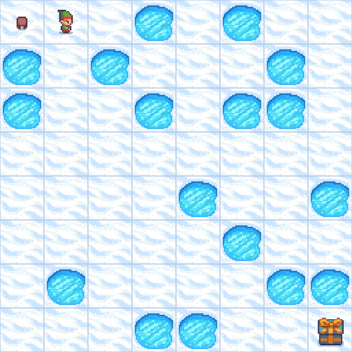
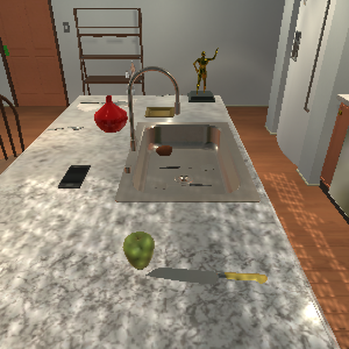
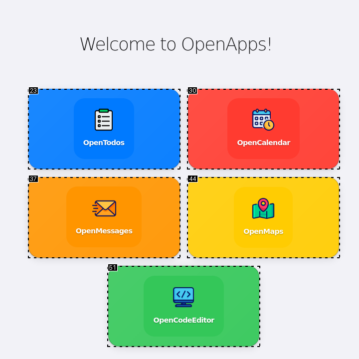
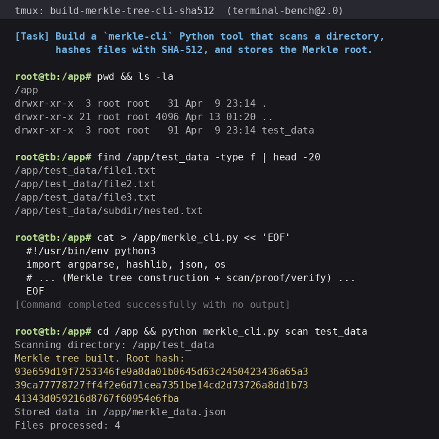
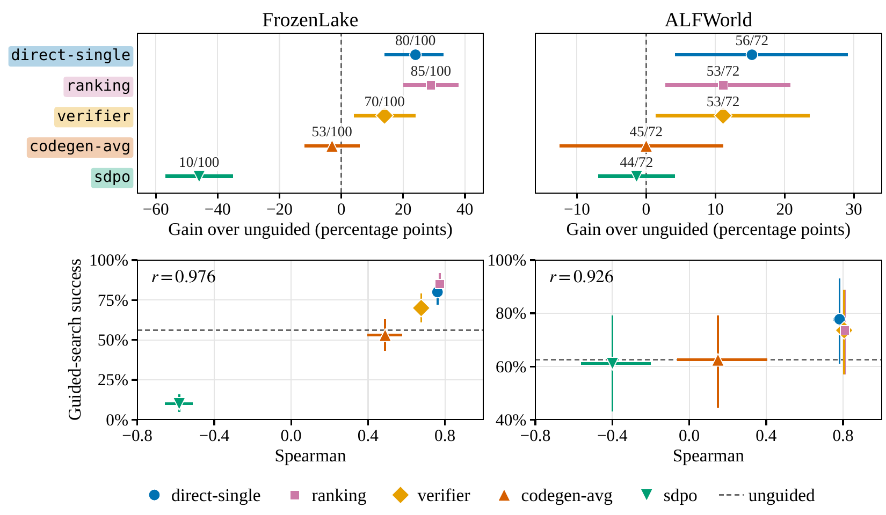

A training-free testbed for dense supervision
Evaluate a reward signal
before you train.
Long-horizon LLM agents take hundreds of actions, yet an outcome-only reward tells them nothing about the steps along the way. QVal measures whether a dense supervision signal is Q-aligned, so signal quality can be judged on common ground, cheaply, and apart from the engineering of any training pipeline. And Q-alignment pays off: it strongly predicts how much a signal improves an agent's success when it guides the agent's actions.
The tool
A testbed for the post-training community
What QVal measures, why Q-alignment is the right target, and how to install, run, and extend it on your own methods and environments.
The bottleneck
Dense supervision methods all try to score intermediate steps. They are usually evaluated through the downstream performance of a full training pipeline.
That is expensive, it confounds the quality of the signal with other training choices (optimization, normalization, how the signal is mixed with other rewards), and it means methods are rarely compared on common ground.
“Can we evaluate dense supervision signals in isolation, before any expensive post-training runs?”
The idea: Q-alignment
A dense supervision method assigns a scalar score k(s, a) to each action.
QVal measures one property: within a state, does the method give higher scores to the
actions that make eventual success more likely?
The reference Q-value Qπ(s, a) is the
return of executing a in s and then continuing under a strong
reference policy π (an optimal policy or expert planner where available, a
frontier model otherwise). The reference only labels the data; it need not be the policy
later trained or guided by the signal. Scores need not be comparable across states, and
predictions live on incompatible scales, so we compare the ordering they
induce: Spearman ρ over each state's candidate actions, averaged
over states. Same inputs, same targets, fixed backbones.
How the testbed works
The same five-stage recipe runs for every environment. You can skip the first three and use our pre-collected datasets.
- Collect trajectories. Roll agents out in multi-turn environments.
- Sample states and candidate actions. Draw states from the middle of the trajectories, each with a set of four candidate actions.
- Label with reference Q-values. Restore each state, execute the candidate, follow the reference policy, and record the discounted return. For stochastic references, keep the best return over k continuations (Max-Value Monte Carlo).
- Collect method predictions. Run the method of interest to score every candidate.
- Evaluate by rank correlation. Compute Spearman ρ between the method's scores and the reference labels within each state, then average over states.
For each candidate action
-
Collect & sample
a state and its candidates
→ (s, a) -
Label · MVMC
best of k rollouts
→ Qπ(s, a) -
Predict
the method scores it
→ k(s, a)
Measure Q-alignment within the state
averaged over states
Quickstart
QVal is plug-and-play. The benchmark catalog ships pre-populated and its datasets come pre-collected, so evaluating the built-in methods on the built-in environments is four commands. One catalog is the single source of truth: the configs are generated from it, and the final step discovers and pairs every result on its own.
# clone llenvs alongside this repo, then:
uv pip install -e ".[all]"python scripts/generate_configs.pypython scripts/pipeline/predict.py --config \
catalogs/qval_benchmark/configs/prediction/frozen_lake/no-gpu/100pt_8x8_q35-27-or_text.yaml# discovers every prediction, writes within-state Spearman ρ
python scripts/pipeline/evaluate.py
Models are served through the backends declared in
shared/configs/backends.yaml. Generated configs are grouped by hardware
class: no-gpu/ for API-backed models, gpu-<N> for local
models on N GPUs. For full runs,
scripts/slurm/submit_predictions.sh submits every config as a cluster job
with its class's resources.
Extend the testbed
QVal is made for your experiments. You can define your own registry catalog
(catalogs/<your_experiment>/catalog.py): add your methods or environments
there and generate configs with generate_configs.py.
+ A new method
A method turns a (state, action, next_state) step into a scalar.
Subclass DenseSignalMethod and implement
evaluate (override evaluate_batch if it batches), register
its type in method_factory.py, then append a
MethodSpec to the catalog and regenerate.
class MyMethod(DenseSignalMethod):
def evaluate(self, point: EvaluationPoint) -> float:
# point.state / action / next_state / history;
# self.context: task & reward text, signal_type …
return float(...) # math.nan on failure+ A new environment
Environments come through llenvs, a unified, stateless interface (env.step(state, action)
is pure) that makes Monte-Carlo rollouts from arbitrary states possible. Write an
environment-context YAML, add an EnvironmentSpec to the catalog,
collect a dataset once, and regenerate.
adapter: my_env # an llenvs adapter
env_name: my_env:eval
max_steps: 40
reward_signal_name: task_completion
task_description: >-
The agent acts in …
evaluator_extractor: # method text → number
type: numericThe study
Applying QVal at scale
We point the testbed at the field and report what aligns with value: 21 methods across seven families, six backbones, text and vision modalities, and four environments. Then we check that Q-alignment predicts downstream success when a signal guides an agent.
Four environments at release
Spanning text and vision, from closed-action navigation to open-ended shell use. Each sampled state comes with four candidate actions, labelled by the strongest reference policy available for the environment.




The benchmark
Explore every method's Q-alignment below. The default view is the benchmark itself; the other two views are the image-input and state-value ablations.
Does Q-alignment predict downstream performance?
We let five signals guide an actor at test time. At each step the actor proposes four
actions, the signal scores them, and the top-scoring one is executed; the unguided baseline
executes one sampled action. This selection uses only the order of the scores within a
state, which is exactly what Q-alignment measures. We run direct-single,
ranking, verifier, codegen-avg and
sdpo on FrozenLake (100 maps, Gemma 4 31B) and ALFWorld (24 games × 3 episodes,
Qwen3.5 27B).

Q-alignment tracks task success.
Across the five signals, Q-alignment correlates strongly with guided-search success
(Pearson r = 0.976 on FrozenLake, 0.926 on ALFWorld).
direct-single, ranking and verifier raise
success in both environments; codegen-avg shows no clear gain, and
sdpo drops FrozenLake success to 10%.
Measure on the decisions your actor will face.
On the benchmark's FrozenLake data, codegen-avg and
verifier score alike (ρ = 0.787 vs. 0.764), yet reach 53% vs. 70%
success. On states sampled from the guided-search trajectories, their scores (0.489
vs. 0.676) match the downstream order. The state–action distribution of the dataset
matters.
What we found
The interactive table above holds the full numbers; here is what they add up to.
Main results
Simple prompting baselines are the most Q-aligned.
On average, ranking, direct-16 and verifier
align best with reference values, ahead of more specialized dense supervision
methods. Direct value prediction should be treated as a required baseline.
Performance clusters by family.
Methods in the same family reach similar correlation ranges, which suggests the seven-family taxonomy captures real differences in the signal each family extracts. Embedding-based signals are weak, and self-distillation signals are anti-aligned.
How extra compute is spent matters.
Averaging several estimates improves alignment in 23 of 24 environment–backbone
pairs for direct prompting and in 13 of 17 for generated code
(codegen-avg). Sequential prompting (direct-sequential)
instead lowers alignment on TerminalBench for 4 of 5 backbones.
Environment structure shapes alignment.
Code-generated signals do well only when progress can be written as compact rules over small, structured state and action spaces. Methods that call an LLM at each decision interpret open-ended inputs directly and are more consistently competitive. Still, no method is strongly Q-aligned in the most open-ended environments.
Beyond ranking
Raw scores can be poorly calibrated.
Q-alignment ignores the scale of the scores, which can matter for training. On
ALFWorld, direct-16 and eureka have a raw MSE of 0.07 and
0.61 against reference values; an affine fit reduces both to about 0.002–0.003. A
well-ordered signal may still need normalization.
Selection loss complements Q-alignment.
Guided search executes only the top-scoring action. Selection loss measures the reference value lost by that choice, and tracks guided-search success about as closely as Spearman (Pearson r = −0.977 on FrozenLake, −0.953 on ALFWorld).
Robustness
Text beats vision.
On environments that provide both, methods recover reference values more reliably from text than from images. Text observations often give compact state abstractions, whereas image-based methods must infer them from pixels, so this does not show that visual feedback is intrinsically inferior.
Rankings survive the choice of target.
Relabelling with state values V(s) instead of Q-values largely
preserves the method ordering. Absolute scores do shift: code and pre-trained
methods align better with state values, direct prompting with Q-values.
Labels are stable.
On TerminalBench, re-estimating 100 labels with 128 instead of 16 continuations leaves the method ranking nearly unchanged (ρ = 0.983, same best method). Labels from GPT-5.5 and Claude Opus 4.7 as reference policies keep the sign of all nine compared methods and their ranking, though magnitudes change.
What it means
Signal quality is one ingredient, not the whole recipe.
Post-training success also depends on optimization, on how a signal enters the loss, and on how it interacts with other signals. Some signals that align poorly with the task objective may still help learning, for example as exploration incentives. QVal isolates signal quality so these factors can be studied separately.
Compare against direct prompting first.
Because simple direct value prediction is so competitive when signals are compared directly, future work should report it as a baseline when evaluating signal quality.